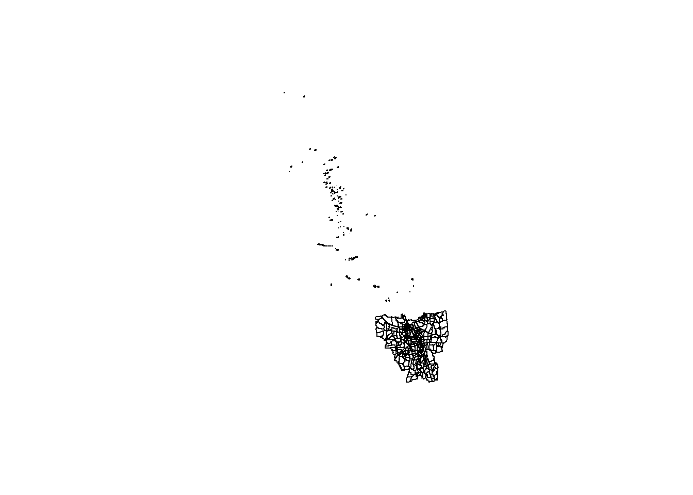
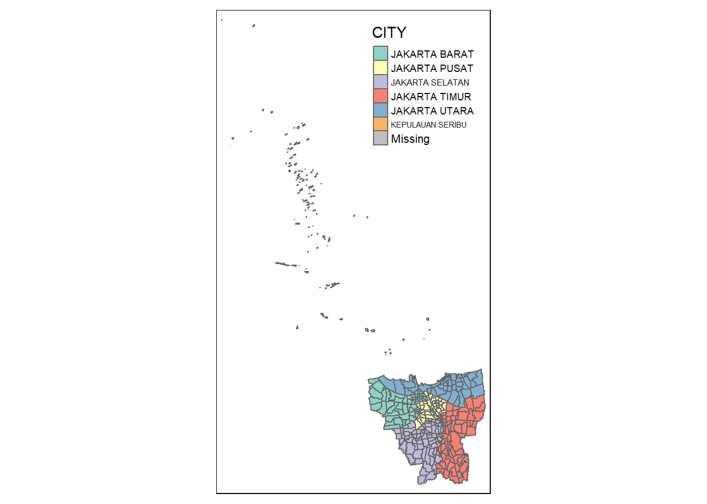
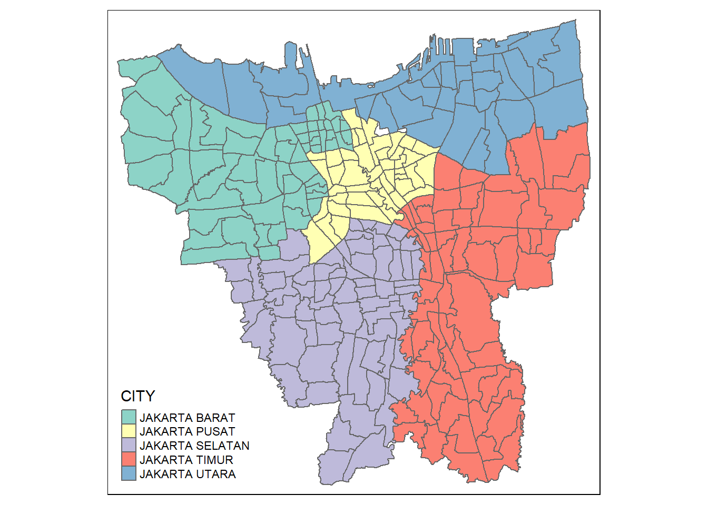
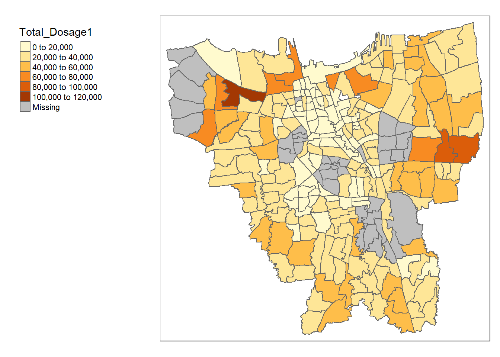
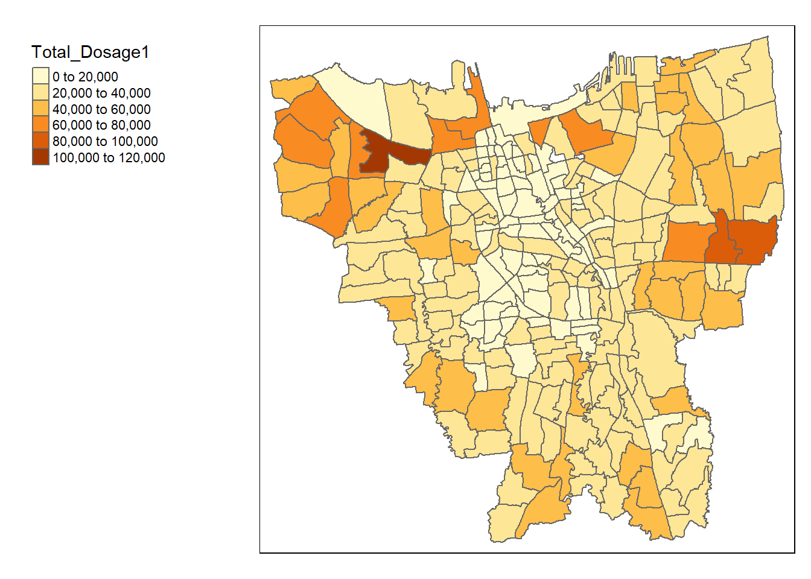
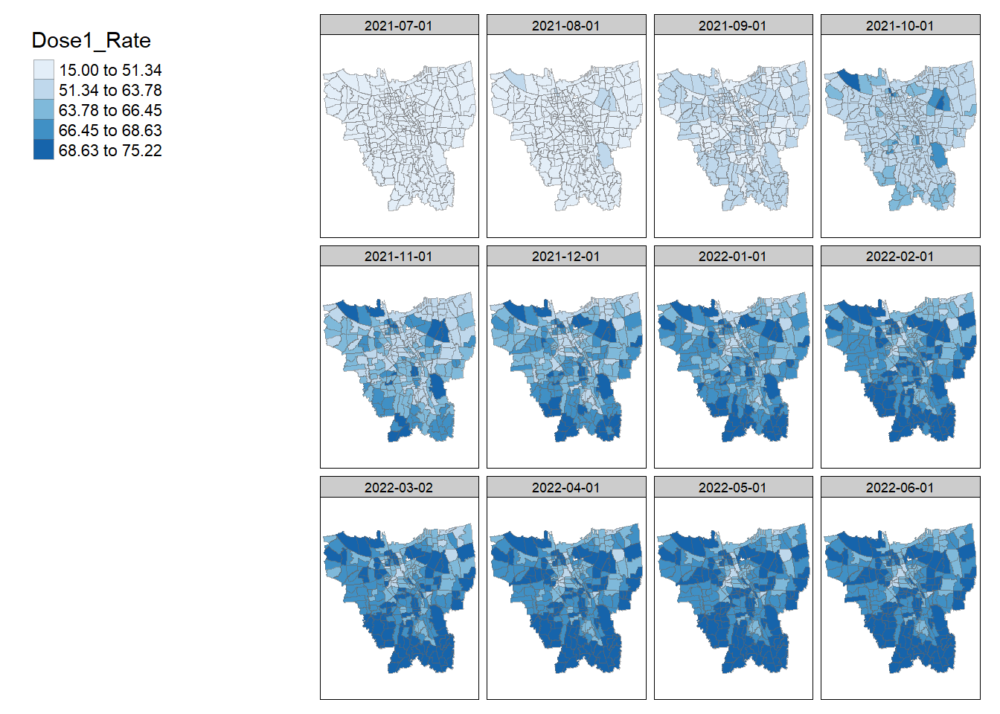

pacman::p_load(sf, sfdep, tmap, maptools, tidyverse, knitr, readxl, kableExtra, dplyr, plyr)Take Home Exercise 2
Setting the Scene
Since late December 2019, an outbreak of a novel coronavirus disease (COVID-19; previously known as 2019-nCoV) was reported in Wuhan, China, which had subsequently affected 210 countries worldwide. In general, COVID-19 is an acute resolved disease but it can also be deadly, with a 2% case fatality rate.
The COVID-19 vaccination in Indonesia is an ongoing mass immunisation in response to the COVID-19 pandemic in Indonesia. On 13 January 2021, the program commenced when President Joko Widodo was vaccinated at the presidential palace. In terms of total doses given, Indonesia ranks third in Asia and fifth in the world.
According to wikipedia, as of 5 February 2023 at 18:00 WIB (UTC+7), 204,266,655 people had received the first dose of the vaccine and 175,131,893 people had been fully vaccinated; 69,597,474 of them had been inoculated with the booster or the third dose, while 1,585,164 had received the fourth dose. Jakarta has the highest percentage of population fully vaccinated with 103.46%, followed by Bali and Special Region of Yogyakarta with 85.45% and 83.02% respectively.
Despite its compactness, the cumulative vaccination rate are not evenly distributed within DKI Jakarta. The question is where are the sub-districts with relatively higher number of vaccination rate and how they changed over time.
Objectives
Apply appropriate Local Indicators of Spatial Association (LISA) and Emerging Hot Spot Analysis (EHSA) to undercover the spatio-temporal trends of COVID-19 vaccination in DKI Jakarta.
In this exercise, we will be doing:
Choropleth Mapping and Analysis
Compute the monthly vaccination rate from July 2021 to June 2022 at sub-district (also known as kelurahan in Bahasa Indonesia) level,
Prepare the monthly vaccination rate maps by using appropriate tmap functions,
Describe the spatial patterns revealed by the choropleth maps (not more than 200 words).
Local Gi* Analysis
With reference to the vaccination rate maps prepared in ESDA:
Compute local Gi* values of the monthly vaccination rate,
Display the Gi* maps of the monthly vaccination rate. The maps should only display the significant (i.e. p-value < 0.05)
With reference to the analysis results, draw statistical conclusions (not more than 250 words).
Emerging Hot Spot Analysis(EHSA)
With reference to the local Gi* values of the vaccination rate maps prepared in the previous section:
Perform Mann-Kendall Test by using the spatio-temporal local Gi* values,
Select three sub-districts and describe the temporal trends revealed (not more than 250 words), and
Prepared a EHSA map of the Gi* values of vaccination rate. The maps should only display the significant (i.e. p-value < 0.05).
With reference to the EHSA map prepared, describe the spatial patterns revelaed. (not more than 250 words).
Data Used
Aspatial data
For the purpose of the study, data from Riwayat File Vaksinasi DKI Jakarta will be used. This gives us the daily vaccination data. We will take the first of the month as the reference point. We are taking monthly data from 1 July 2021 to 1 June 2022.
Geospatial data
For the purpose of this study, DKI Jakarta administration boundary 2019 will be used. The data set can be downloaded at Indonesia Geospatial portal, specifically at this page.
Set Up
Install Packages
Data prep
Geospatial Data
Import data
jkt <- st_read(dsn = "data/geospatial",
layer = "BATAS_DESA_DESEMBER_2019_DUKCAPIL_DKI_JAKARTA")Reading layer `BATAS_DESA_DESEMBER_2019_DUKCAPIL_DKI_JAKARTA' from data source
`C:\zoe-chia\IS415\Take-home_Ex\Take-home_Ex02\data\geospatial'
using driver `ESRI Shapefile'
Simple feature collection with 269 features and 161 fields
Geometry type: MULTIPOLYGON
Dimension: XY
Bounding box: xmin: 106.3831 ymin: -6.370815 xmax: 106.9728 ymax: -5.184322
Geodetic CRS: WGS 84Filter and select
For the purpose of our study, we will only be keeping the first 9 fields in this dataframe.
jkt <- jkt[, 0:9]Rename columns
jkt <- jkt %>%
dplyr::rename(
PROVINCE=PROVINSI,
CITY=KAB_KOTA,
DISTRICT=KECAMATAN,
VILLAGE_CODE=KODE_DESA,
VILLAGE=DESA,
SUBDISTRICT=DESA_KELUR,
CODE=KODE,
TOTALPOP=JUMLAH_PEN
)Data Wrangling
Before we even start visualising our data, we have to first check for two things: invalid geometries and missing values, which could impact future calculations and representations.
Reference was taken from the senior sample submissions for the code for this section, with credit to Megan Sim’s Take-Home Exercise 1: Analysing and Visualising Spatio-temporal Patterns of COVID-19 in DKI Jakarta, Indonesia.
Check for the number of geometries that are not valid
Show the code
length(which(st_is_valid(jkt) == FALSE))[1] 0Check for missing values
Show the code
jkt[rowSums(is.na(jkt))!=0,]Simple feature collection with 2 features and 9 fields
Geometry type: MULTIPOLYGON
Dimension: XY
Bounding box: xmin: 106.8412 ymin: -6.154036 xmax: 106.8612 ymax: -6.144973
Geodetic CRS: WGS 84
OBJECT_ID VILLAGE_CODE VILLAGE CODE PROVINCE CITY DISTRICT
243 25645 31888888 DANAU SUNTER 318888 DKI JAKARTA <NA> <NA>
244 25646 31888888 DANAU SUNTER DLL 318888 DKI JAKARTA <NA> <NA>
SUBDISTRICT TOTALPOP geometry
243 <NA> 0 MULTIPOLYGON (((106.8612 -6...
244 <NA> 0 MULTIPOLYGON (((106.8504 -6...Verifying and transforming coordinate system
Check current CRS
st_crs(jkt)Coordinate Reference System:
User input: WGS 84
wkt:
GEOGCRS["WGS 84",
DATUM["World Geodetic System 1984",
ELLIPSOID["WGS 84",6378137,298.257223563,
LENGTHUNIT["metre",1]]],
PRIMEM["Greenwich",0,
ANGLEUNIT["degree",0.0174532925199433]],
CS[ellipsoidal,2],
AXIS["latitude",north,
ORDER[1],
ANGLEUNIT["degree",0.0174532925199433]],
AXIS["longitude",east,
ORDER[2],
ANGLEUNIT["degree",0.0174532925199433]],
ID["EPSG",4326]]Transform CRS
jkt <- st_transform(jkt, 23845)Verify transformation
st_crs(jkt)Coordinate Reference System:
User input: EPSG:23845
wkt:
PROJCRS["DGN95 / Indonesia TM-3 zone 54.1",
BASEGEOGCRS["DGN95",
DATUM["Datum Geodesi Nasional 1995",
ELLIPSOID["WGS 84",6378137,298.257223563,
LENGTHUNIT["metre",1]]],
PRIMEM["Greenwich",0,
ANGLEUNIT["degree",0.0174532925199433]],
ID["EPSG",4755]],
CONVERSION["Indonesia TM-3 zone 54.1",
METHOD["Transverse Mercator",
ID["EPSG",9807]],
PARAMETER["Latitude of natural origin",0,
ANGLEUNIT["degree",0.0174532925199433],
ID["EPSG",8801]],
PARAMETER["Longitude of natural origin",139.5,
ANGLEUNIT["degree",0.0174532925199433],
ID["EPSG",8802]],
PARAMETER["Scale factor at natural origin",0.9999,
SCALEUNIT["unity",1],
ID["EPSG",8805]],
PARAMETER["False easting",200000,
LENGTHUNIT["metre",1],
ID["EPSG",8806]],
PARAMETER["False northing",1500000,
LENGTHUNIT["metre",1],
ID["EPSG",8807]]],
CS[Cartesian,2],
AXIS["easting (X)",east,
ORDER[1],
LENGTHUNIT["metre",1]],
AXIS["northing (Y)",north,
ORDER[2],
LENGTHUNIT["metre",1]],
USAGE[
SCOPE["Cadastre."],
AREA["Indonesia - onshore east of 138°E."],
BBOX[-9.19,138,-1.49,141.01]],
ID["EPSG",23845]]Plot the geometry
plot(st_geometry(jkt))
From the plot, we observe that the dataframe includes the outer islands in Jakarta.
Referencing the senior’s findings, “CITY” is the column that we should be looking at to identify these islands as it is the higher level boundary.
Removal of Outer Islands
Check CITY types
unique(jkt$"CITY")[1] "JAKARTA BARAT" "JAKARTA PUSAT" "KEPULAUAN SERIBU" "JAKARTA UTARA"
[5] "JAKARTA TIMUR" "JAKARTA SELATAN" NA Visualising CITY to identify which returns the outer islands
tm_shape(jkt) +
tm_polygons("CITY")
Removing outer islands
Selecting and keeping those that are NOT the outer islands
jkt <- filter(jkt, CITY != "KEPULAUAN SERIBU")Plot
tm_shape(jkt) +
tm_polygons("CITY")
Aspatial Data
As we have multiple excel files in our aspatial data, we will first have a look at what we are dealing with in these files. We’ll take a look at July 2021’s data.
jul2021 <- read_excel("data/aspatial/01 Juli 2021.xlsx")
glimpse(jul2021)Rows: 268
Columns: 21
$ `KODE KELURAHAN` <chr> NA, "3172051003", "317304…
$ `WILAYAH KOTA` <chr> NA, "JAKARTA UTARA", "JAK…
$ KECAMATAN <chr> NA, "PADEMANGAN", "TAMBOR…
$ KELURAHAN <chr> "TOTAL", "ANCOL", "ANGKE"…
$ SASARAN <dbl> 7739060, 20393, 25785, 25…
$ `BELUM VAKSIN` <dbl> 5041111, 13272, 16477, 18…
$ `JUMLAH\r\nDOSIS 1` <dbl> 2696017, 7114, 9299, 6301…
$ `JUMLAH\r\nDOSIS 2` <dbl> 1181740, 3287, 3221, 2644…
$ `TOTAL VAKSIN\r\nDIBERIKAN` <dbl> 3877757, 10401, 12520, 89…
$ `LANSIA\r\nDOSIS 1` <dbl> 502873, 1297, 2003, 820, …
$ `LANSIA\r\nDOSIS 2` <dbl> 449073, 1128, 1746, 703, …
$ `LANSIA TOTAL \r\nVAKSIN DIBERIKAN` <dbl> 951946, 2425, 3749, 1523,…
$ `PELAYAN PUBLIK\r\nDOSIS 1` <dbl> 2084559, 5672, 7121, 5170…
$ `PELAYAN PUBLIK\r\nDOSIS 2` <dbl> 655641, 2053, 1364, 1731,…
$ `PELAYAN PUBLIK TOTAL\r\nVAKSIN DIBERIKAN` <dbl> 2740200, 7725, 8485, 6901…
$ `GOTONG ROYONG\r\nDOSIS 1` <dbl> 35263, 44, 84, 103, 58, 7…
$ `GOTONG ROYONG\r\nDOSIS 2` <dbl> 11624, 13, 31, 24, 18, 25…
$ `GOTONG ROYONG TOTAL\r\nVAKSIN DIBERIKAN` <dbl> 46887, 57, 115, 127, 76, …
$ `TENAGA KESEHATAN\r\nDOSIS 1` <dbl> 73322, 101, 91, 208, 70, …
$ `TENAGA KESEHATAN\r\nDOSIS 2` <dbl> 65402, 93, 80, 186, 63, 3…
$ `TENAGA KESEHATAN TOTAL\r\nVAKSIN DIBERIKAN` <dbl> 138724, 194, 171, 394, 13…jun2022 <- read_excel("data/aspatial/01 Juni 2022.xlsx")
glimpse(jun2022)Rows: 268
Columns: 34
$ `KODE KELURAHAN` <chr> NA, "3172051003", "317304…
$ `WILAYAH KOTA` <chr> NA, "JAKARTA UTARA", "JAK…
$ KECAMATAN <chr> NA, "PADEMANGAN", "TAMBOR…
$ KELURAHAN <chr> "TOTAL", "ANCOL", "ANGKE"…
$ SASARAN <dbl> 8941211, 23947, 29381, 29…
$ `BELUM VAKSIN` <dbl> 1444901, 4440, 5083, 5671…
$ `JUMLAH\r\nDOSIS 1` <dbl> 7496310, 19507, 24298, 23…
$ `JUMLAH\r\nDOSIS 2` <dbl> 6744379, 17077, 21186, 20…
$ `JUMLAH\r\nDOSIS 3` <dbl> 2894577, 7041, 9520, 7055…
$ `TOTAL VAKSIN\r\nDIBERIKAN` <dbl> 17135266, 43625, 55004, 5…
$ `LANSIA\r\nDOSIS 1` <dbl> 652454, 1580, 2482, 1463,…
$ `LANSIA\r\nDOSIS 2` <dbl> 614306, 1442, 2367, 1378,…
$ `LANSIA\r\nDOSIS 3` <dbl> 614306, 1442, 2367, 1378,…
$ `LANSIA TOTAL \r\nVAKSIN DIBERIKAN` <dbl> 1616341, 3806, 6393, 3470…
$ `PELAYAN PUBLIK\r\nDOSIS 1` <dbl> 1483935, 3982, 3921, 4612…
$ `PELAYAN PUBLIK\r\nDOSIS 2` <dbl> 1379628, 3645, 3535, 4192…
$ `PELAYAN PUBLIK\r\nDOSIS 3` <dbl> 397185, 1188, 1190, 1040,…
$ `PELAYAN PUBLIK TOTAL\r\nVAKSIN DIBERIKAN` <dbl> 3260748, 8815, 8646, 9844…
$ `GOTONG ROYONG\r\nDOSIS 1` <dbl> 88237, 179, 178, 262, 102…
$ `GOTONG ROYONG\r\nDOSIS 2` <dbl> 86236, 173, 179, 260, 99,…
$ `GOTONG ROYONG\r\nDOSIS 3` <dbl> 43638, 101, 112, 132, 54,…
$ `GOTONG ROYONG TOTAL\r\nVAKSIN DIBERIKAN` <dbl> 218111, 453, 469, 654, 25…
$ `TENAGA KESEHATAN\r\nDOSIS 1` <dbl> 115665, 140, 135, 348, 12…
$ `TENAGA KESEHATAN\r\nDOSIS 2` <dbl> 112332, 130, 131, 333, 12…
$ `TENAGA KESEHATAN\r\nDOSIS 3` <dbl> 91122, 111, 108, 263, 93,…
$ `TENAGA KESEHATAN TOTAL\r\nVAKSIN DIBERIKAN` <dbl> 319119, 381, 374, 944, 33…
$ `TAHAPAN 3\r\nDOSIS 1` <dbl> 4288318, 11318, 14850, 13…
$ `TAHAPAN 3\r\nDOSIS 2` <dbl> 3764246, 9632, 12580, 116…
$ `TAHAPAN 3\r\nDOSIS 3` <dbl> 1982005, 4789, 6475, 4910…
$ `TAHAPAN 3 TOTAL\r\nVAKSIN DIBERIKAN` <dbl> 10034569, 25739, 33905, 3…
$ `REMAJA\r\nDOSIS 1` <dbl> 867701, 2308, 2732, 2858,…
$ `REMAJA\r\nDOSIS 2` <dbl> 787631, 2055, 2394, 2562,…
$ `REMAJA\r\nDOSIS 3` <dbl> 31046, 68, 91, 81, 26, 82…
$ `REMAJA TOTAL\r\nVAKSIN DIBERIKAN` <dbl> 1686378, 4431, 5217, 5501…We observe that the number of columns in our aspatial dataset differs. To find out which columns are not present in the other:
setdiff(colnames(jun2022), colnames(jul2021)) [1] "JUMLAH\r\nDOSIS 3" "LANSIA\r\nDOSIS 3"
[3] "PELAYAN PUBLIK\r\nDOSIS 3" "GOTONG ROYONG\r\nDOSIS 3"
[5] "TENAGA KESEHATAN\r\nDOSIS 3" "TAHAPAN 3\r\nDOSIS 1"
[7] "TAHAPAN 3\r\nDOSIS 2" "TAHAPAN 3\r\nDOSIS 3"
[9] "TAHAPAN 3 TOTAL\r\nVAKSIN DIBERIKAN" "REMAJA\r\nDOSIS 1"
[11] "REMAJA\r\nDOSIS 2" "REMAJA\r\nDOSIS 3"
[13] "REMAJA TOTAL\r\nVAKSIN DIBERIKAN" setdiff(colnames(jul2021), colnames(jun2022))character(0)Seems like the extra/missing columns are not a cause for concern as we will not be using them anyway.
Understanding columns
Column Meanings
- Kode Kelurahan: sub-district code
- WILAYAH KOTA: City area
- KECAMATAN: Sub district
- KELURAHAN: Ward
- SASARAN: target
- BELUM VAKSIN: Yet to be vaccinated
- JUMLAH\\r\\nDOSIS 1: Total dosage 1
- TOTAL VAKSIN\\r\\nDIBERIKAN: Total vaccine granted
- LANSIA\\r\\nDOSIS 1: Elderly dose 1
- PELAYAN PUBLIK\\r\\nDOSIS 1: Public servant dosage 1
- TENAGA KESEHATAN\\r\\nDOSIS 1: Health personnel dosage 1
- TENAGA KESEHATAN TOTAL\\r\\nVAKSIN DIBERIKAN: TOTAL HEALTH PERSONNEL - VACCINES WERE GIVENFor the purpose of this assignment, we will only focus on the overall vaccine administration, not specific to elderly, teenagers, public workers etc. We should focus on Target and Yet to be Vaccinated instead of Population. We will not use total number of vaccination given (i.e. TOTAL VAKSIN VIBERIE).
We will need to select our columns of interest, rename them and create a date column for our dataset. We can do this for all files by creating a function for preprocessing.
Creating the Date Column
As I had previously renamed the aspatial file names to just their dates.xlsx, we only need to exclude the extension from the file name.
Reference for basename(): https://stackoverflow.com/questions/2548815/find-file-name-from-full-file-path
aspatial_preprocess <- function(filepath){
result_file <- read_xlsx(filepath, .name_repair = "minimal")
get_date_from_name <- basename(filepath)
date <- substring(get_date_from_name, 1, nchar(get_date_from_name)-5)
result_file$Date <- date
return(result_file)
}Adding on code to select necessary columns:
aspatial_preprocess <- function(filepath){
result_file <- read_xlsx(filepath, .name_repair = "minimal")
get_date_from_name <- basename(filepath)
date <- substring(get_date_from_name, 1, nchar(get_date_from_name)-5)
result_file$Date <- date
result_file <- result_file %>%
select("Date", c(0:10))
return(result_file)
}Apply to all files:
# Get all file names with fll path (full.name = TRUE)
fileslist <-list.files(path = "data/aspatial", pattern = "*.xlsx", full.names=TRUE)
# afterwards, for every element in fileslist, apply aspatial_process function
dflist <- lapply(seq_along(fileslist), function(x) aspatial_preprocess(fileslist[x]))Convert the dflist into an actual dataframe with ldply():
vaccinations <- ldply(dflist, data.frame)
glimpse(vaccinations)Rows: 3,216
Columns: 12
$ Date <chr> "01 Agustus 2021", "01 Agustus 2021", "01 Agus…
$ KODE.KELURAHAN <chr> NA, "3172051003", "3173041007", "3175041005", …
$ WILAYAH.KOTA <chr> NA, "JAKARTA UTARA", "JAKARTA BARAT", "JAKARTA…
$ KECAMATAN <chr> NA, "PADEMANGAN", "TAMBORA", "KRAMAT JATI", "J…
$ KELURAHAN <chr> "TOTAL", "ANCOL", "ANGKE", "BALE KAMBANG", "BA…
$ SASARAN <dbl> 8941211, 23947, 29381, 29074, 9752, 26285, 215…
$ BELUM.VAKSIN <dbl> 4399496, 12155, 13727, 18226, 4987, 13716, 102…
$ JUMLAH..DOSIS.1 <dbl> 4541715, 11792, 15654, 10848, 4765, 12569, 113…
$ JUMLAH..DOSIS.2 <dbl> 1686820, 4268, 4905, 3712, 2036, 5242, 4089, 6…
$ TOTAL.VAKSIN..DIBERIKAN <dbl> 6228535, 16060, 20559, 14560, 6801, 17811, 154…
$ LANSIA..DOSIS.1 <dbl> 503443, 1230, 2014, 866, 857, 1339, 1138, 1019…
$ JUMLAH..DOSIS.3 <dbl> NA, NA, NA, NA, NA, NA, NA, NA, NA, NA, NA, NA…Formatting Date Column
Since the values in the Date column were derived from substrings, they’re naturally in string format. We should convert that into datetime, keeping in mind that the values in Date are in Bahasa Indonesia
# parses the 'Date' column into Month(Full Name)-YYYY datetime objects
# reference: https://stackoverflow.com/questions/53380650/b-y-date-conversion-gives-na
# locale="ind" means that the locale has been set as Indonesia
Sys.setlocale(locale="ind")[1] "LC_COLLATE=Indonesian_Indonesia.1252;LC_CTYPE=Indonesian_Indonesia.1252;LC_MONETARY=Indonesian_Indonesia.1252;LC_NUMERIC=C;LC_TIME=Indonesian_Indonesia.1252"vaccinations$Date <- c(vaccinations$Date) %>%
as.Date(vaccinations$Date, format ="%d %B %Y")
glimpse(vaccinations)Rows: 3,216
Columns: 12
$ Date <date> 2021-08-01, 2021-08-01, 2021-08-01, 2021-08-0~
$ KODE.KELURAHAN <chr> NA, "3172051003", "3173041007", "3175041005", ~
$ WILAYAH.KOTA <chr> NA, "JAKARTA UTARA", "JAKARTA BARAT", "JAKARTA~
$ KECAMATAN <chr> NA, "PADEMANGAN", "TAMBORA", "KRAMAT JATI", "J~
$ KELURAHAN <chr> "TOTAL", "ANCOL", "ANGKE", "BALE KAMBANG", "BA~
$ SASARAN <dbl> 8941211, 23947, 29381, 29074, 9752, 26285, 215~
$ BELUM.VAKSIN <dbl> 4399496, 12155, 13727, 18226, 4987, 13716, 102~
$ JUMLAH..DOSIS.1 <dbl> 4541715, 11792, 15654, 10848, 4765, 12569, 113~
$ JUMLAH..DOSIS.2 <dbl> 1686820, 4268, 4905, 3712, 2036, 5242, 4089, 6~
$ TOTAL.VAKSIN..DIBERIKAN <dbl> 6228535, 16060, 20559, 14560, 6801, 17811, 154~
$ LANSIA..DOSIS.1 <dbl> 503443, 1230, 2014, 866, 857, 1339, 1138, 1019~
$ JUMLAH..DOSIS.3 <dbl> NA, NA, NA, NA, NA, NA, NA, NA, NA, NA, NA, NA~Remove Unwanted Columns
Reference: https://sparkbyexamples.com/r-programming/remove-column-in-r/
vaccinations <- vaccinations %>% select(-c(LANSIA..DOSIS.1, TOTAL.VAKSIN..DIBERIKAN, JUMLAH..DOSIS.3))Renaming columns to English version
vaccinations <- vaccinations %>%
dplyr::rename(
Date=Date,
Code=KODE.KELURAHAN,
City=WILAYAH.KOTA,
District=KECAMATAN,
Sub_District=KELURAHAN,
Target=SASARAN,
Yet_to_be_vaccinated=BELUM.VAKSIN,
Total_Dosage1=JUMLAH..DOSIS.1,
Total_Dosage2=JUMLAH..DOSIS.2
)glimpse(vaccinations)Rows: 3,216
Columns: 9
$ Date <date> 2021-08-01, 2021-08-01, 2021-08-01, 2021-08-01, ~
$ Code <chr> NA, "3172051003", "3173041007", "3175041005", "31~
$ City <chr> NA, "JAKARTA UTARA", "JAKARTA BARAT", "JAKARTA TI~
$ District <chr> NA, "PADEMANGAN", "TAMBORA", "KRAMAT JATI", "JATI~
$ Sub_District <chr> "TOTAL", "ANCOL", "ANGKE", "BALE KAMBANG", "BALI ~
$ Target <dbl> 8941211, 23947, 29381, 29074, 9752, 26285, 21566,~
$ Yet_to_be_vaccinated <dbl> 4399496, 12155, 13727, 18226, 4987, 13716, 10232,~
$ Total_Dosage1 <dbl> 4541715, 11792, 15654, 10848, 4765, 12569, 11334,~
$ Total_Dosage2 <dbl> 1686820, 4268, 4905, 3712, 2036, 5242, 4089, 6150~Ensure we select only our study area
vaccinations <- vaccinations %>% filter(`City` %in% c('JAKARTA BARAT',
'JAKARTA PUSAT',
'JAKARTA SELATAN',
'JAKARTA TIMUR',
'JAKARTA UTARA'))Combine Geospatial and Aspatial Data
vaccinations_jkt <- left_join(jkt, vaccinations, by = c("CITY" = "City",
"SUBDISTRICT"="Sub_District",
"DISTRICT"="District"))Choropleth Mapping and Analysis
Code to visualise combined dataset
tm_shape(vaccinations_jkt) +
tm_polygons("Total_Dosage1") +
tm_layout(legend.outside = TRUE,
legend.outside.position = "left")
Dealing with Missing Values
wrt: https://is415-msty.netlify.app/posts/2021-09-10-take-home-exercise-1/#identifying-mismatched-sub-district-records
# checks for unique values of Sub_District in cases_jakarta that aren't already present in jkt and vice versa
vax_subdistrict <- c(vaccinations$Sub_District)
jkt_subdistrict <- c(jkt$SUBDISTRICT)
unique(vax_subdistrict[!(vax_subdistrict %in% jkt_subdistrict)])[1] "BALE KAMBANG" "HALIM PERDANA KUSUMAH" "JATI PULO"
[4] "KAMPUNG TENGAH" "KERENDANG" "KRAMAT JATI"
[7] "PAL MERIAM" "PINANG RANTI" "RAWA JATI" unique(jkt_subdistrict[!(jkt_subdistrict %in% vax_subdistrict)])[1] "KRENDANG" "RAWAJATI" "TENGAH"
[4] "BALEKAMBANG" "PINANGRANTI" "JATIPULO"
[7] "PALMERIAM" "KRAMATJATI" "HALIM PERDANA KUSUMA"Correcting mismatched values
jkt$SUBDISTRICT[jkt$SUBDISTRICT == 'BALEKAMBANG'] <- 'BALE KAMBANG'
jkt$SUBDISTRICT[jkt$SUBDISTRICT == 'HALIM PERDANA KUSUMA'] <- 'HALIM PERDANA KUSUMAH'
jkt$SUBDISTRICT[jkt$SUBDISTRICT == 'JATIPULO'] <- 'JATI PULO'
jkt$SUBDISTRICT[jkt$SUBDISTRICT == 'TENGAH'] <- 'KAMPUNG TENGAH'
jkt$SUBDISTRICT[jkt$SUBDISTRICT == 'KRAMATJATI'] <- 'KRAMAT JATI'
jkt$SUBDISTRICT[jkt$SUBDISTRICT == 'KRENDANG'] <- 'KERENDANG'
jkt$SUBDISTRICT[jkt$SUBDISTRICT == 'PALMERIAM'] <- 'PAL MERIAM'
jkt$SUBDISTRICT[jkt$SUBDISTRICT == 'PINANGRANTI'] <- 'PINANG RANTI'
jkt$SUBDISTRICT[jkt$SUBDISTRICT == 'RAWAJATI'] <- 'RAWA JATI'vaccinations_jkt <- left_join(jkt, vaccinations, by = c("SUBDISTRICT"="Sub_District"))Code to visualise new combined dataset
tm_shape(vaccinations_jkt) +
tm_polygons("Total_Dosage1") +
tm_layout(legend.outside = TRUE,
legend.outside.position = "left")
Computing Monthly Vaccination Rate
Monthly vaccination rate = (Sum per month of) Total number of vaccinations / Total population
Reference: https://is415-msty.netlify.app/posts/2021-09-10-take-home-exercise-1/#cumulative-confirmed-cases-rate
# grouping based on the sub-district and date
vaccinations_jkt <- vaccinations_jkt %>%
group_by(SUBDISTRICT, Date) %>%
dplyr::mutate(`Dose1_Rate` = ((sum(Total_Dosage1)/(TOTALPOP))*100))vaccinations_jkt <- vaccinations_jkt %>%
group_by(SUBDISTRICT, Date) %>%
dplyr::mutate(`Dose2_Rate` = ((sum(Total_Dosage2)/(TOTALPOP))*100))Plotting our Choropleth Map
tm_shape(vaccinations_jkt) +
tm_fill("Dose1_Rate",
palette = "Blues",
style="quantile") +
tm_facets(by="Date") +
tm_borders(alpha = 0.5)+
tm_layout(legend.outside = TRUE,
legend.outside.position = "left")
Analysis
We can see that the overall vaccination rate for the first dose increases over the years, with a relatively sharper increase from October to November 2021.
More people in the northern portion of Jakarta got their first dose of vaccines earlier. On the other hand, those in the southern part of Jakarta, though getting their vaccinations slightly later, have a higher vaccination rate.